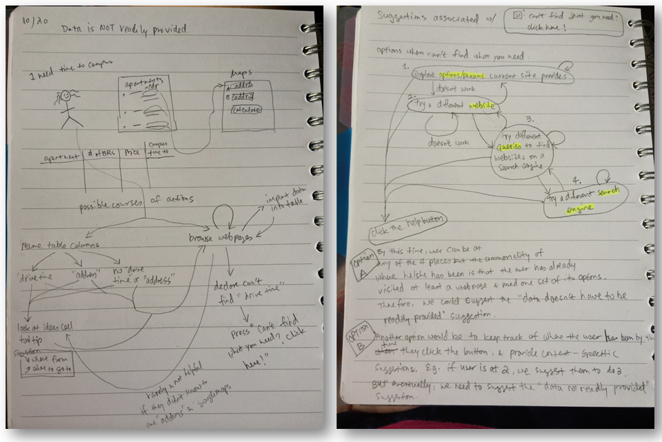
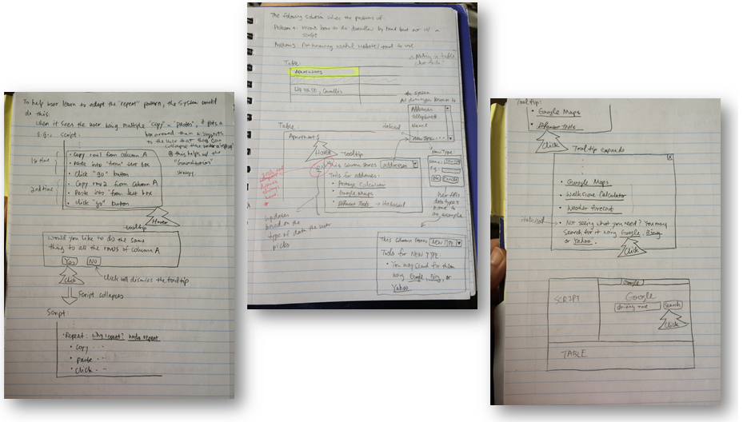
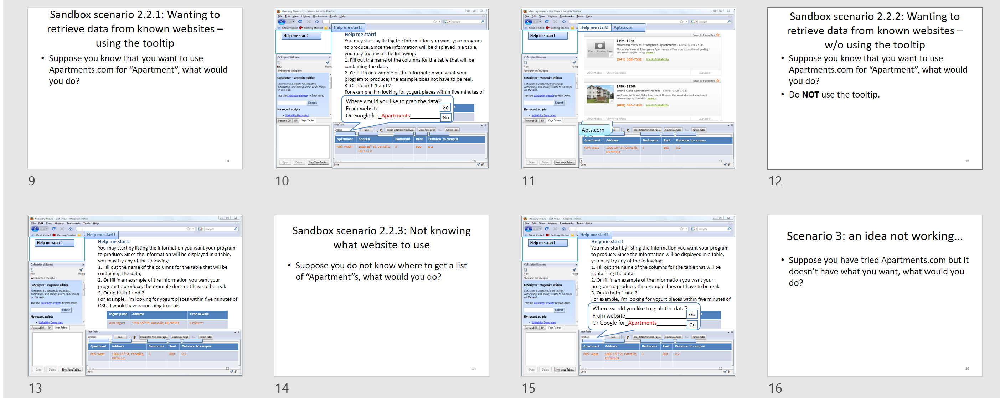
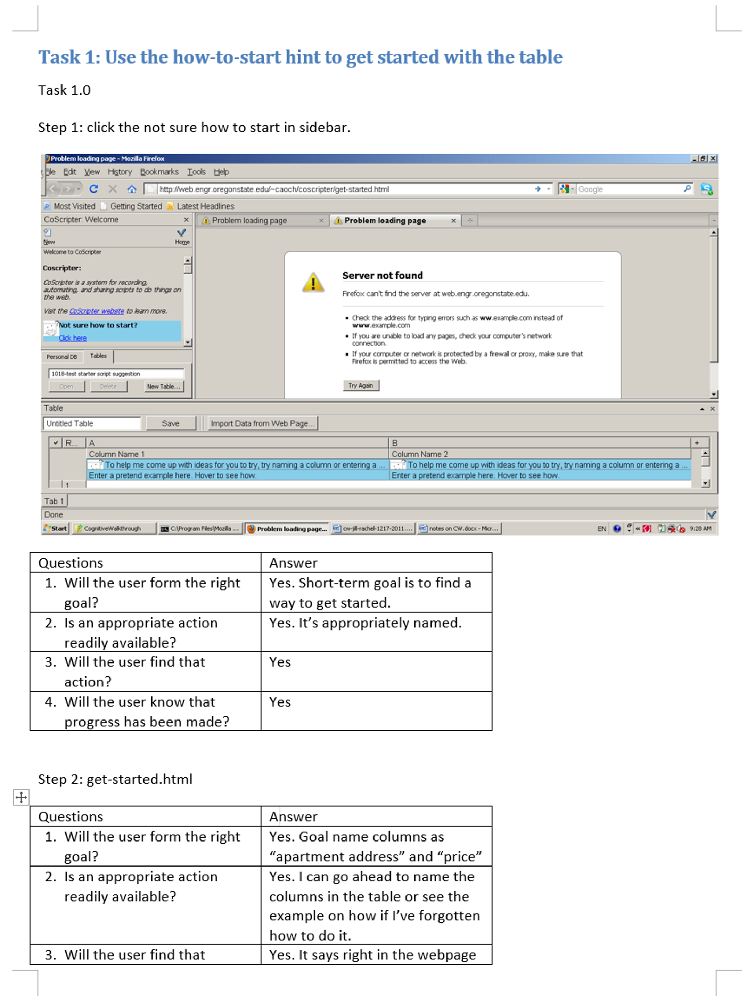
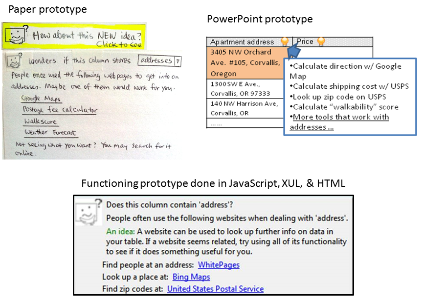

Projects -> An Idea Garden for End-User Programmers -> Idea Garden Design
Idea Garden Design
Methods: brainstorming, sketching, paper prototyping, wireframes, high-fidelity prototyping, storyboard, design walkthrough
Tools: paper & pencil, PowerPoint, JavaScript, HTML, XUL
Skills highlighted:
- Translating design recommendations into design solutions
- Developing design concepts and guidelines
- Low- & hi-fidelity prototyping
The key design recommendation derived from the user research was for the system to help users generate more ideas when they are stuck, especially ideas to help them to reframe the problem at hand. In this section, I will first describe the design concept that I came up with to address this design recommendation. I will show a slice of the design solution and walk you through how I arrived at the solution, including my design process and some of the design artifacts generated along the way.
The Idea Garden design concept
To address the key design recommendation, I developed a design concept called Idea Garden. An Idea Garden is an extension of a programming environment that offers ideas to users who are stuck. Its goal is to help users help themselves as opposed to solving users' problems for them. In this sense, an Idea Garden is a partner to the user rather than an automated problem-solver.
A slice of the design solution: Table tooltip feature
Based on the design concept, a design solution is the Table Tooltip feature (for IBM CoScripter). This feature encourages a new workflow where users generate more ideas with the system's help:
- User is stuck.
- Idea Garden shows an icon.
- User hovers over the icon, a tooltip appears.
- User reads it and gets a new idea.
- User tries out the idea and succeeds.
My design process
I followed a 4-step, iterative design process to create and refine Idea Garden features like the Table Tooltip.
Design challenges and guidelines
To address the design recommendation, there were a few challenges. I developed design guidelines to help guide the design solution toward solving those challenges.
I followed a 4-step, iterative design process to create and refine Idea Garden features like the Table Tooltip.
| Design challenges | Design guidelines |
|---|---|
| Content: What information does a user need to generate more ideas to solve a programming problem? | A suggestion should include both strategy information and programming knowledge. |
| Timing: When is the right time to deliver that information to users? | A suggestion should become available when users' data and actions indicate that they may be encountering a barrier. |
| Communication style: How to inform users of available information without interrupting their flow? A design goal was to let users remain in control of their attention. | A suggestion should adopt a negotiation interruption style to let users remain in control of their attention. |
| Motivation: How to attract users to relevant information so that they would follow up with that information and take action? | A suggestion should motivate users in two ways: (1) demonstrate its relevancy to users by contextualizing itself in users' recent actions and the data user has worked with, (2) connect to users emotionally through a personified character |
Solution ideas and prototypes
Below is a sample of design artifacts generated during the design process.
Designing workflows
Diagrams similar to state transition diagrams that represent users' new workflows under the new design.
GUI sketches for proposed workflows
Scenarios
Scenarios alongside of a low-fidelity prototype created in PowerPoint.
Design walkthroughs
Cognitive walkthrough completed with a working prototype coded in JavaScript.
Low- & High-fidelity prototypes
Paper prototypes, PowerPoint GUIs, and functioning prototype completed in JavaScript, XUL, and HTML.
Evaluate with users
Design is an iterative process. No designer can get it right the first time. See Usability Testing for how I evaluated my designs.
Deliverables
- An Exploration of Design Opportunities for “Gardening” End-User Programmers’ Ideas , Best Paper Award at IEEE Symposium on Visual Languages and Human-Centric Computing, premium conference in human factors in programming environment design.
- From Barriers to Learning in the Idea Garden: An Empirical Study, IEEE Symposium on Visual Languages and Human-Centric Computing, 2012.
- Idea Garden: Situated Support for Problem Solving by End-User Programmers, Interacting with Computers, 2014.